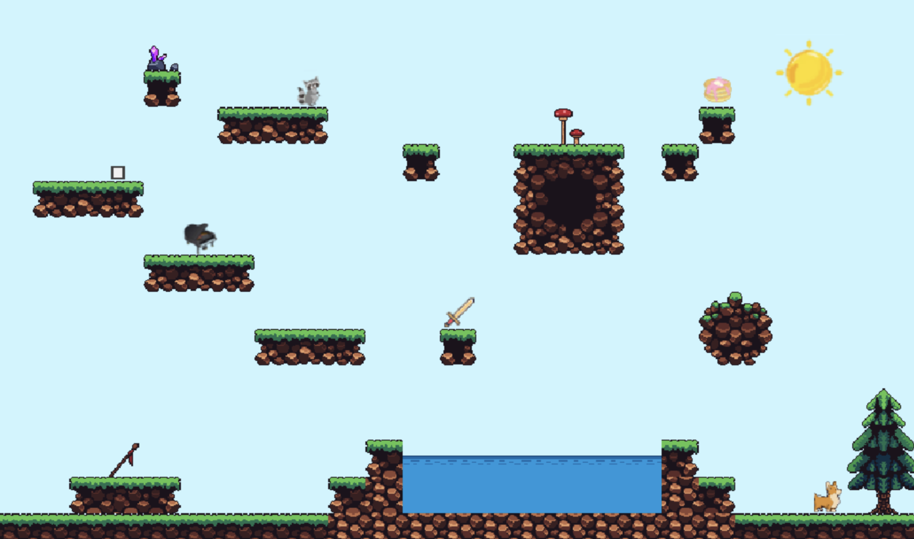

Charlotte Clark
Developer | Designer | Writer
I’m Charlotte Clark — a product‑minded operator and MBA candidate at UCLA Anderson (Class of 2027) focused on building and scaling technology that creates real‑world impact.
Before business school, I worked in enterprise software consulting at Hitachi Solutions, where I led AI use‑case workshops, supported enterprise software implementations, and partnered with cross‑functional teams on digital transformation initiatives for large organizations. Earlier in my career, I spent several years as a senior behavioral therapist working with children with developmental disabilities, an experience that deeply shaped how I think about user‑centered design, accessibility, and ethical technology.
Today, I split my time between academics, product‑oriented leadership roles, and impact investing. At Anderson, I serve in leadership positions with AnderTech, Net Impact, and Anderson Venture Impact Partners (Health & Wellness vertical), where I source and evaluate early‑stage digital health and mental‑wellness startups. I’m also a Board Fellow through the Golub Capital program, working with the nonprofit One for the World. In January 2026, I joined PS Hummingbird, a Microsoft‑focused AI consultancy, as Chief of Staff to help scale operations.
I hold a B.A. in International Relations with a minor in French from the University of Southern California (2020). I’m especially interested in product management, AI‑enabled enterprise software, and venture investing at the intersection of technology and social impact.
Outside of work and school, I’m a marathon runner, an avid reader, and a chronic side‑project builder — from data tools and writing projects to the occasional overly‑ambitious creative build.
Recent Projects & Updates

Project Title Here
January 2025
Description of your project or what you've been up to. Add details about what you built, learned, or accomplished.
View Project →
Another Project Title
December 2024
Another project description. Talk about what makes this special or what you learned from it.
View Project →
Platformer Explorer
January 2022
On this cute platformer world, you can use the left, right, and up buttons on the keyboard to make your character explore!
This site uses object collision detection and a fixed time step loop to run the game consistently across all platforms.
play now →